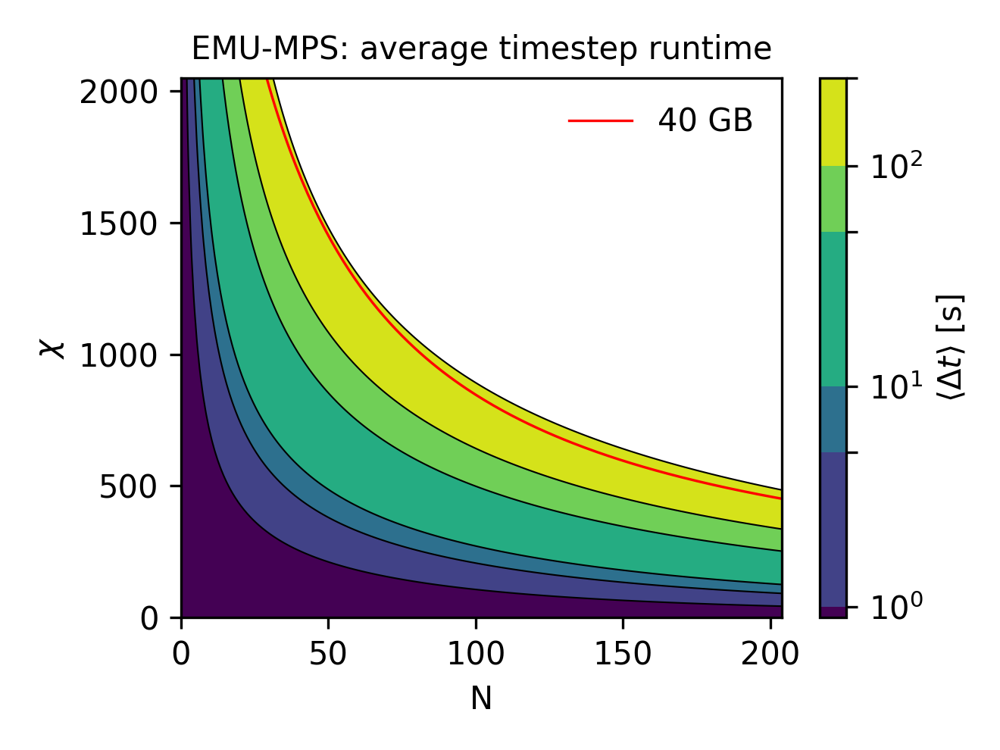
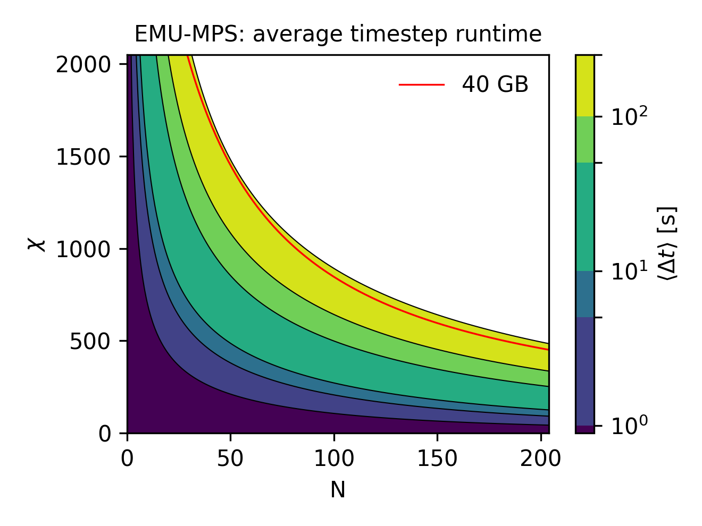

emu-mps benchmarks
All the benchmarks are run on a single NVIDIA A100 GPU of Pasqal's DGX-cluster and for best performance on heavy workloads we recommend using a similar setup. There, users should expect emu-mps to emulate up to
- 30 atoms for quenches
- 50 atoms for adiabatic sequences
for 2D systems and for realistic pulse sequences (~μs) that can be run on the QPU. For these relevant hard use-cases, described in more detail in the next section, the bond dimension is let to grow free to achieve the desired precision.
In all other scenarios, for specific combinations of number of qubits \(N\) and bond dimension \(\chi\), the resources needed to emulate a sequence can be estimated by providing some upper bounds to:
- RSS: the resident set size, i.e. the maximum needed memory
- \(\langle\Delta t\rangle\): GPU time to do a single step in the time evolution
These quantities are represented, in the following plots:
 

The RSS plot (left) shows the peak memory cost of the emulation. It is expected to stay constant at fixed bond dimension and thus represent the total memory occupation of the emulation of a sequence. As evident, the emulator is mostly limited by the available memory (40 GB on NVIDIA A100), as it restricts the maximum number of qubits/bond dimension pair allowed. To get the total estimated runtime instead, one should simply multiply the time estimate in the timing plot (right) by the number of steps in the emulated sequence. Finally, given the technical nature of these estimates, they rely on some previous knowledge about matrix product states and the TDVP algorithm. We encourage anyone who might be interested into the derivation, to have a look at the resource estimation page in advanced topic section of this documentation.
While the simple resource estimation provided above allows to upper bound the memory/time cost of an emulation, a final very important remark has to be made. If during an emulation, the bond dimension reach a user-set maximum value (with the max_bond_dim argument), the accuracy of the subsequent results of the time evolution cannot be guaranteed anymore, as discussed here.
Having sketched up the expected performance, in the next section, we make those statements more concrete by providing more details about use-cases benchmarks. Concretely, we will discuss the relevant register/ pulse sequences and the performance metrics of choice.
Use-case benchmarks
Benchmark efforts, documented here, are meant to provide insights for emu-mps users about
- Performance: runtime, memory usage, bond dimension as a function of qubit number (see here)
- Accuracy: different precision levels as compared to state vector solvers
given a set of meaningful sequences of interest (quench, adiabatic and use-case sequences) that we are going to introduce case by case. Finally, we will only focus on 2D atomic registers as they represent the most numerically challenging and interesting case to study.
The benchmarks are ordered in subpages by general topic.
The accuracy benchmarks compare results between emulators to create confidence in the results emu-mps generates. The performance benchmarks exist to exhibit the runtime and memory consumption characteristics of emu-mps. Based on these, the reader should get a feel for what kind of parameters would be required to be able to run a given sequence in a given time. Note that this is independent of whether the emulation results are actually accurate (see here). Finally, the noise page presents benchmarks regarding noisy simulations, focusing on effects specific to noise that are not already covered in the other pages.
Sequences used
- Adiabatic evolution: Here at each time step, the evolution of the driving \(\Omega, \Delta\) is slow enough to guarantee that the evolved state is still an equilibrium state of \(H\). Note that the adiabaticity of a sequence is dependent on the energy gaps in the Hamiltonian, and since these gaps decrease with qubit number, most sequences are only adiabatic up to a given qubit number.
# from https://pulser.readthedocs.io/en/stable/tutorials/afm_prep.html
# parameters in rad/µs and ns
Omega_max = 2.0 * 2 * np.pi
U = Omega_max / 2.0
delta_0 = -6 * U
delta_f = 2 * U
t_rise = 500
t_fall = 1000
t_sweep = (delta_f - delta_0) / (2 * np.pi * 10) * 3000
R_interatomic = MockDevice.rydberg_blockade_radius(U)
reg = Register.rectangle(rows, columns, R_interatomic, prefix="q")
if perm_map:
reg_coords = reg._coords
reg = Register.from_coordinates([reg_coords[i] for i in perm_map])
rise = Pulse.ConstantDetuning(RampWaveform(t_rise, 0.0, Omega_max), delta_0, 0.0)
sweep = Pulse.ConstantAmplitude(
Omega_max, RampWaveform(t_sweep, delta_0, delta_f), 0.0
)
fall = Pulse.ConstantDetuning(RampWaveform(t_fall, Omega_max, 0.0), delta_f, 0.0)
seq = Sequence(reg, MockDevice)
seq.declare_channel("ising", "rydberg_global")
seq.add(rise, "ising")
seq.add(sweep, "ising")
seq.add(fall, "ising")
- Quench: One of the most fundamental protocols to drive a system out of equilibrium, it is realized here as follows: at time \(t=0\) the system is prepared in the ground state \(|\psi_0\rangle\) of \(H_0\). The driving field is then suddenly turned on (\(\Omega\neq0\)) and the system is evolved for \(t > 0\), as \(|\psi\rangle=e^{-iHt}|\psi_0\rangle\).
hx = 1.5 # hx/J_max
hz = 0 # hz/J_max
t = 1.5 # t/J_max
# Set up Pulser simulations
R = 7 # μm
reg = Register.rectangle(nx, ny, R, prefix="q")
# Conversion from Rydberg Hamiltonian to Ising model
U = AnalogDevice.interaction_coeff / R**6 # U_ij
NN_coeff = U / 4
omega = 2 * hx * NN_coeff
delta = -2 * hz * NN_coeff + 2 * U
T = np.round(1000 * t / NN_coeff)
seq = Sequence(reg, MockDevice) #circumvent the register spacing constraints
seq.declare_channel("ising", "rydberg_global")
# Add the main pulse to the pulse sequence
simple_pulse = Pulse.ConstantPulse(T, omega, delta, 0)
seq.add(simple_pulse, "ising")
These two types of driving typically complement each other. Since the matrix product state approach in emu-mps strives to minimize the stored information, keeping track of a single equilibrium state in adiabatic time evolution is typically easier. While this single state can be a complicated object itself, quenches, driving the system out of equilibrium, involve taking into account multiple excited states, and are typically computationally harder to emulate.
CPU/GPU hardware
Emu-mps is built on top of pytorch. Thus, it can run on most available CPUs and GPUs, from a laptop to a cluster. The presented benchmarks are run on an NVIDIA DGX cluster node, requesting the following resources
- GPU: 1 NVIDIA A100 (40 GB)
- CPU: a benchmark-dependent number of cores on an AMD EPYC 7742
Of course, performance will vary depending on the hardware.
For this reason, if at any point of your work, performance becomes critical, we always recommend to use Pasqal's DGX cluster.
If you intend to run emu-mps on your laptop, for example, please be aware that the suggestion to use a GPU for heavier workloads might not be valid.
In such case it is always good to check performance on a couple of runs, changing the emu-mps config default values as documented in the API.
In particular num_gpus_to_use = 0 will run the emulation on CPU, while num_gpus_to_use ≥ 1 on GPU/s.